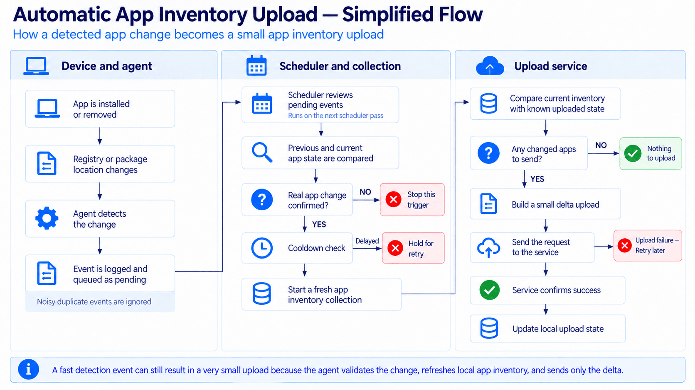
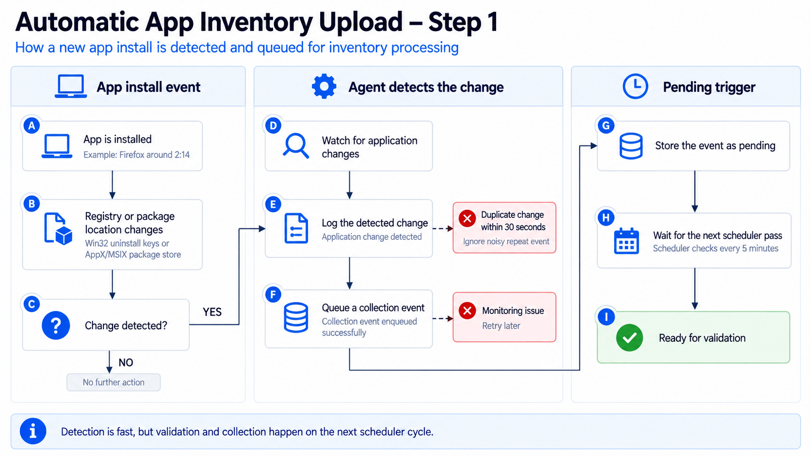

This blog will show how the Device App Inventory Agent now reacts to application changes instead of waiting for the normal collection 4-hour harvest cycle
Introduction to App Inventory
App Inventory was already one of the more important recent changes to Intune inventory. It replaced a very limited application view (Discovered Apps) with richer data collected by the Microsoft Device Inventory Agent. What interested me most, though, wasn’t just the extra columns. It was the architecture behind it.
Device Inventory is turning into an extensible framework. Device Hardware properties were first. Application inventory came next. Registry inventory followed. Each new workload can reuse the same policy model, local storage, harvesting pipeline and upload foundation instead of Microsoft building another standalone Windows agent for every new inventory type.
That architecture now matters for another reason. In the current Device Inventory Agent build I tested, App Inventory no longer has to wait for the normal four-hour collection before it notices a new application. The agent can detect an application change, queue it, validate that something really changed, and start a targeted App Inventory collection on the next five-minute scheduler pass.
| In this lab capture, Firefox was detected at 02:14:48 and the App Inventory upload completed at 02:19:48. That is five minutes from change detection to successful upload. |
Device Inventory is becoming an extensible platform
When Device Inventory first appeared, it was easy to think of it as Resource Explorer with a newer backend. You selected hardware properties such as BIOS, CPU, storage, TPM, battery or operating system information, and the Device Inventory Agent collected those values.
The newer additions make the bigger design much easier to see. App Inventory added a completely different data source without introducing a separate inventory service. Registry Inventory then did the same thing again. As we described in the Patch My PC registry inventory deep dive, the useful pattern is one extensible agent, multiple collection providers, and one shared transformation and upload foundation.
Related: Windows Registry Data Is Coming to Intune Device Inventory.
This is why adding application data or registry data is much simpler than it would be in a collection model where every feature owns its own agent. The policy tells the Device Inventory Agent which category to collect. The agent selects the right source, turns the result into inventory entities, stores it locally, and hands it to the same uploader.
App Inventory was the first big proof of that model
Microsoft App Inventory expands the existing Device Inventory Agent to collect installed application data. Microsoft documents two main sources on Windows. Traditional Win32 applications come from the Windows uninstall registry locations, including per-user installs. Store and MSIX applications come from the Windows package manager.
It collects and merges those two sources into one application inventory. The result is much richer than Discovered Apps. Depending on the properties you select in the Properties Catalog, App Inventory can include architecture, install scope, install location, install date, size, uninstall information, user information, and the platform-specific application identifier.
The other important part is the upload model. The first sync can establish the full state, but later uploads are delta-based. A fresh local collection can contain hundreds of applications while the device only sends the application records that are new, changed, or removed.
For the full deep dive … check Microsoft Intune App Inventory Deep Dive Webinar | Better Than Discover Apps?
The remaining problem was freshness
The original App Inventory experience was already dramatically better than waiting days for Discovered Apps, but it was still fundamentally periodic. On the tested agent, the normal refresh is 240 minutes. The log confirms the same cadence after a scheduled run: a collection finishing at 02:25 schedules the next normal collection for 06:25.
| 02:25:33 Next collection occurs at 06:25:33 Normal collection cadence: 4 hours |
That means timing mattered. If an application appeared just after a normal inventory run, the device could know nothing about it until the next periodic refresh. Microsoft public documentation currently describes App Inventory as running multiple times per day with the MMP C check-in cycle. That still describes the normal path, but the current client now has another path for application changes.
What changed: the agent can react to an application install
The new behavior is event-driven. The agent continuously monitors Windows locations that change when traditional or packaged applications are installed or removed. When Windows signals a change, the agent records an application event and puts it into a pending queue.
It does not immediately trust that signal. Installers are noisy, and one installation can cause several registry changes. The agent first filters rapid duplicate notifications, then waits for the next scheduler pass. On this build, that scheduler checks pending work every five minutes.
{kind=link}

Firefox at 02:14: the log tells the whole story
For the test, Firefox was installed at around 02:14. This was the packaged Firefox build, so Windows updated the per user AppX/MSIX package repository. The Device Inventory Agent noticed that change almost immediately.
| Time | What happened | Why it matters |
| 02:14:48 | Application change detected and queued. | Detection is immediate. The agent does not wait four hours before noticing the change. |
| 02:19:11 | Firefox is validated as a real addition. | The next scheduler pass compares the old and current application state before collecting. |
| 02:19:11 | Application Inventory collection starts. | Only the App Inventory workload is targeted and its cached inventory is invalidated. |
| 02:19:46 | A fresh merged application inventory is ready. | The device rebuilds the local inventory from registry and package sources. |
| 02:19:47 | One App Inventory upload request is built. | The full local harvest is reduced to the delta that actually needs to be sent. |
| 02:19:48 | App Inventory upload succeeds. | Five minutes after detection, the changed application state is uploaded. |
| 02:14:48 Application change detected via AppX/MSIX 02:14:48 Enqueued collection event: ApplicationEvent 02:19:11 Validated changes for AppX/MSIX: Added: Mozilla Firefox 02:19:11 Starting collection run due to trigger event(s): ApplicationEvent 02:19:47 Returning 1 upload data requests 02:19:48 Data successfully uploaded for App Inventory |
Step 1: detect first, collect later
The first part of the design is deliberately cheap. The agent watches the application registration locations instead of repeatedly rebuilding the entire app inventory just to see whether something changed. For Win32 applications, that means the uninstall locations. For AppX and MSIX it means the package registration locations.
When Windows reports a change, the agent logs it and queues an application event. Rapid follow-up changes are suppressed for a short period, so one noisy installer does not create a storm of collection runs. The important point is that detection and collection are separate. Detecting a registry or package change only says something might have happened.
{kind=link}

Figure 2. Application changes are detected quickly, but the event is queued for later validation.
Step 2: validate that an application really changed
On the next scheduler pass, the pending event is validated against the application state the agent previously stored. This prevents a registry notification from automatically becoming an inventory upload. The device compares the previous snapshot with what is present now and continues only if it can prove that an application was added or removed.
That is exactly what happened with Firefox. At 02:19:11, the log moves from a generic AppX/MSIX change to a concrete result: Mozilla Firefox was added. Only then does the agent allow the App Inventory collection to proceed.
There is also a cooldown around triggered collections. In the same log, another application change was validated five minutes later, but the agent reported that only five minutes had elapsed and ten minutes were required at the current cooldown level. The event was not thrown away. It remained pending for retry.
| 02:24:48 Trigger … validated changes, collection will proceed 02:24:48 Cooldown active: 5.0 min elapsed, need 10 min 02:24:48 Events remain pending for retry |

Step 3: refresh App Inventory without moving the normal timer
Once the trigger is accepted, the agent no longer runs for every Device Inventory category. The collection is filtered to Application Inventory. It also invalidates the existing merged application cache first, which is the key to freshness. The next App Inventory pass must rebuild the local application state instead of reusing the older cached result.
The normal scheduled inventory timer is left alone. After the Firefox-triggered run, the log explicitly says the timer was not reset, and the already scheduled collection remained in place. This gives the agent two paths at the same time: the normal periodic collection and a targeted application change path.
| 02:19:11 Starting collection run due to trigger event(s): ApplicationEvent (filtered=True) 02:19:11 Invalidated app inventory cache for pending ApplicationEvent trigger 02:19:48 Trigger collection recorded: 1/30 today, backoff level 0 02:19:48 Timer NOT reset – next scheduled collection remains at 02:24:10 |
The fresh App Inventory pass then does what App Inventory already did before this trigger existed. It collects Win32 application data from registry-based sources, collects packaged applications through the Windows Package Manager, merges the results, and writes the current state to the shared inventory database.
Step 4: a full local harvest can still become a tiny upload
The best part of the design is what happens after the fresh collection. Triggered collection does not mean the device uploads its entire application list every five minutes. The uploader compares the current application entities with the state it already knows about and builds only the requests needed for the delta.
In this Firefox test, the fresh local harvest contained 502 application entities while the uploader had 501 existing application states. The result was one App Inventory upload request. The log never prints the application name in that request, so I wouldn’t claim the request payload line alone proves the entity is Firefox. But the sequence is very strong: Firefox is the validated addition, the local application count increases by one, and one changed entity is uploaded immediately afterward.
| 02:19:47 Known application states: 501 02:19:47 Current application entities: 502 02:19:47 Returning 1 upload data requests 02:19:47 Sending 1 app inventory requests to service 02:19:48 Data successfully uploaded for App Inventory |

This is not simply a five-minute full App inventory poll
That distinction matters. A five-minute full application scan and upload loop would be wasteful. What we are seeing is much more controlled. Change detection is lightweight. Validation happens before collection. Triggered collections are throttled. The collection is limited to App Inventory. The cache is refreshed only when necessary. The uploader then sends a delta instead of the whole local state.
The agent also keeps safety rails around the trigger. Rapid duplicate events are suppressed. Triggered collections have a cooldown. The log shows a daily trigger counter and backoff level, and a triggered run does not reset the normal scheduled collection. Those controls are what make an event-driven inventory path practical on a managed Windows fleet.
What this means for App Inventory
The change solves one of the most visible gaps in App Inventory: data freshness after an application install or removal. The normal four-hour path can remain as the safety net, but an application change no longer has to wait for that timer. In the lab capture, the application was detected immediately, validated on the next five-minute scheduler pass, and uploaded a few seconds later.
It also reinforces the larger Device Inventory story. Application inventory, hardware inventory, and registry inventory are not isolated features. They run as workloads on the same extensible client foundation. Once that foundation can react to events, Microsoft can improve freshness for a specific workload without redesigning the complete inventory stack.
| The important wording is “about five minutes”, not “exactly five minutes”. The event is processed on the next scheduler pass, so the actual delay depends on when the application change occurs relative to that cycle. |
One important caveat: this is ahead of the public documentation
Microsoft documentation currently says App Inventory collection runs multiple times per day and is triggered with the MMP C sync and check-in cycle. It does not currently document this application change trigger or the five-minute scheduler behavior.
The behavior described here comes from the current Device Inventory Agent package and the matching Harvester log captured during a real Firefox install. The client also uses flighting, so I would treat this as current client behavior that Microsoft can still control or roll out, rather than assume every tenant and every device already behaves identically.
That is also why I would not replace “multiple times per day” in operational documentation with a hard five-minute SLA. What we can say from this test is more useful anyway: the agent now has an event-driven application change path that can get new App Inventory data uploaded on the next five-minute scheduler pass instead of relying only on the normal four-hour collection.
The log lines that tell you where the flow stopped
If you want to validate the same behavior on a device, the Harvester log gives you a clean set of breadcrumbs. Start with the application change line. Then look for the queued event, validation, the triggered Application Inventory run, cache invalidation, and finally the App Inventory upload result.
| Application change detected via … Enqueued collection event: ApplicationEvent … Validated changes … Added / Removed … Starting collection run due to trigger event(s): ApplicationEvent Invalidated app inventory cache … Returning … upload data requests Data successfully uploaded for App Inventory |
If validation succeeds but the collection does not start, check for the cooldown message. If the collection runs but nothing is uploaded, that can simply mean the fresh inventory matches the state already known to the uploader.
Final thoughts
App Inventory already showed why the Device Inventory Agent is more interesting than its name suggests. Registry Inventory made the extensibility even clearer. This application change trigger is the next logical step: keep the shared inventory foundation, but stop making every data source depend only on a periodic timer.
For application inventory, that turns a four-hour freshness window into something that can react in minutes without turning every five-minute cycle into a full upload. Detect the change, prove it is real, refresh only what is needed and send only the delta. That is a much better fit for the kind of application visibility Intune is trying to become.
Please Note: This behavior is currently controlled through service flighting (Controlled Feature Rollout), so it may not yet be enabled for every tenant.